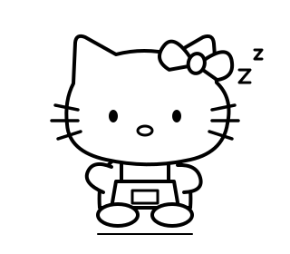

FRAME BY FRAME
HELLO KITTY · KITCHEN MOTION STUDY
Hello Kitty，陪你做饭。
给墨水屏的慢节奏状态设计。先看画面和换帧，再用真机校准。
Hello Kitty 厨房状态演示

今天，也好好吃饭。
选几样手边的食材，我们一起做顿饭。
把平常的日子，煮出一点香气。
kindle
HELLO KITTY · KITCHEN MOTION STUDY
给墨水屏的慢节奏状态设计。先看画面和换帧，再用真机校准。

选几样手边的食材，我们一起做顿饭。
FRAME BY FRAME